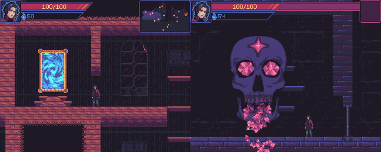
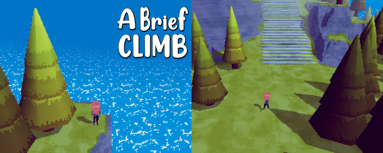
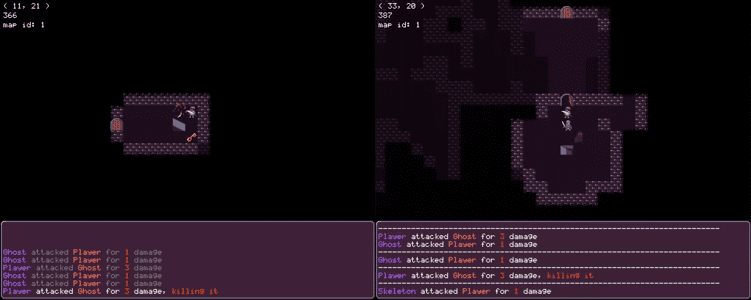
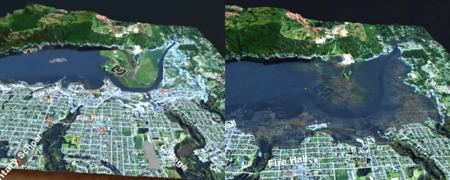
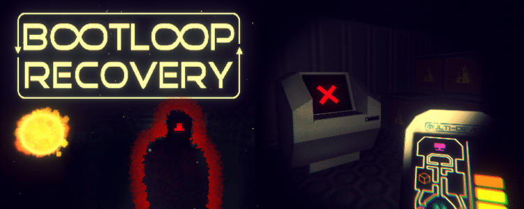
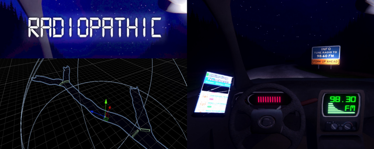
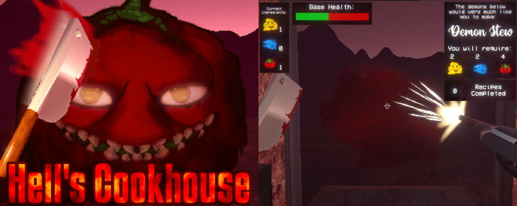

Projects

Unity Metroidvania
The current project I've been working on since late 2021,
and easily the biggest so far. Originally started as a test
platformer controller I created after playing Symphony of
the Night. I was also just getting into creating music and
had started creating songs for an imaginary game, but
decided to make it real. Still a work in progress, but I aim
to finish before I graduate. I've uploaded a couple short video snapshots, one of which is linked below.

A Brief Climb
This game was created in 2020 for the UVic Game Dev Club's
72 hour game jam. The theme was just "Platformer" so I
created something in the vein of "A Short Hike." The gimmick
is that the player can walk up increasingly steep angles
with each item they collect. Although very linear and not
very polished, I was pretty happy with the outcome.

C++ Roguelike
This Dungeon crawling project started mid 2019 and continued
on/off for a couple years. It started as an exercise so that
I could learn C++. I used SDL2 for rendering and input which
left a lot up to me to program myself, making progress on
the game part very slow, but fulfilling the original goal of
gaining experience in the language. I would still like to
complete a roguelike, but likely in an existing engine where
I can focus more on the game itself.

VR Tsunami
This Unity VR project was created in 2018 while I worked
with Victoria Makerspace and Ocean Networks Canada, whose
data we were showing off. The player is guided through
events of a Tsunami taking place in Port Alberni. We demoed
the app several times at events such as Discover Tectoria,
BCTECH Summit, VancouVR Fair, and up in Port Alberni itself.
This generated a bit of news which was very cool, one of
which is linked below:

Bootloop Recovery
Created in 2020 for Ludum Dare 47 "Stuck in a loop," this
was the first jam I'd done in years so it was nice to
finally complete something. Inspiration came from a lot of
pixely 3D horror games I'd seen a lot of on itch.io, so I
prioritized mood/atmosphere most of all.

Radiopathic
Created for 2021's Ludum Dare 49 "Unstable." Definitely a
bit too ambitious with this game, but I managed to complete
something. At the time I was getting into a lot of David
Lynch's things and wanted to create a creepy endless driving
game. I also voiced the radio in-game which was a big time
commitment, plus I'm no voice actor, but I still think it's
neat.

Hell's Cookhouse
This combo FPS and Cooking game was created for the 2020
"Mix and Game Jam." It's a little rough, but I still like
the concept. The theme was to combine multiple genres into
one, so I had the goal be to gather ingredients from enemies
to be used in cooking provided recipes.